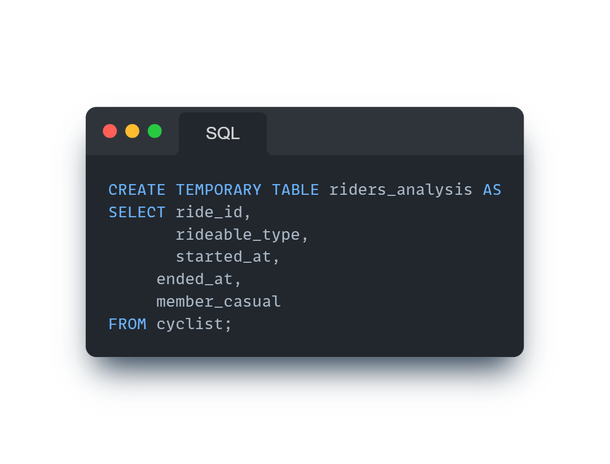
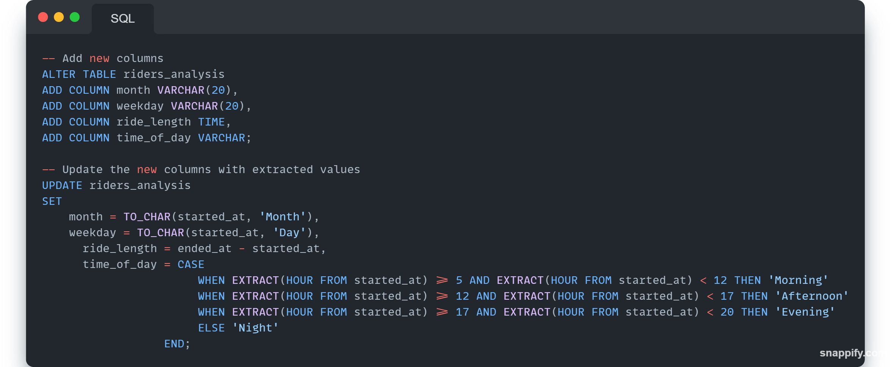
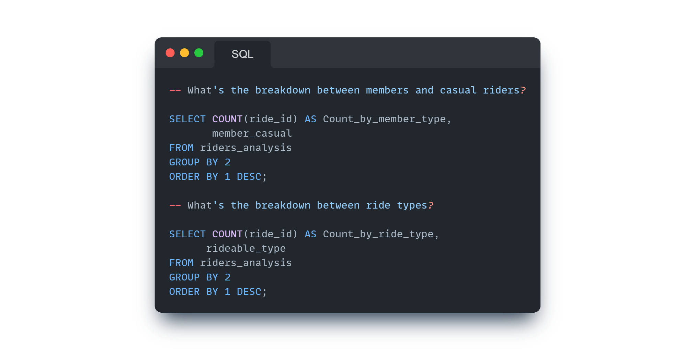
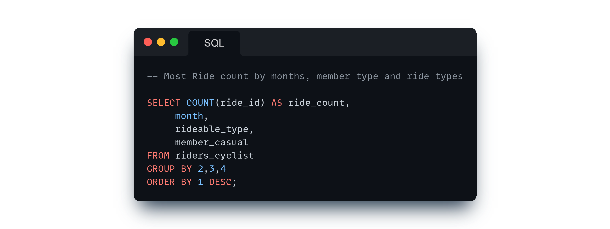
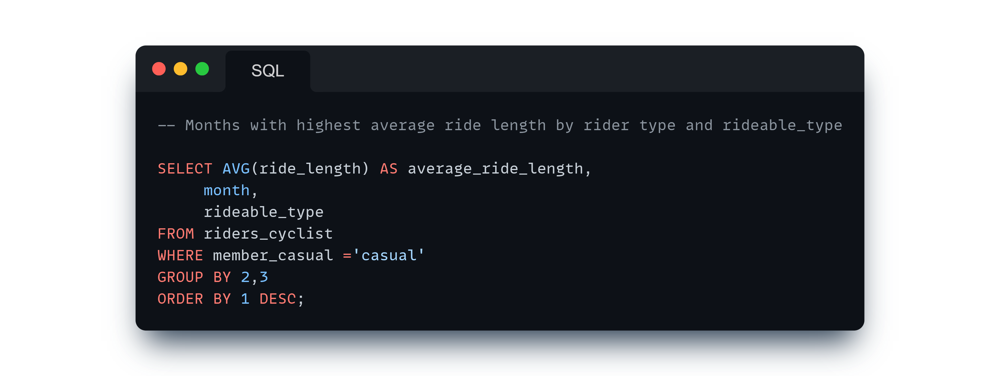

Introduction
This project focuses on integrating, cleaning, and analyzing data from Cyclistic, a bike-sharing service, to uncover insights into bike usage patterns and disparities between annual members and casual riders. By merging multiple CSV files and conducting SQL-based analysis, the project aims to provide actionable insights for marketing strategies, service enhancements, and operational decisions.
Objective
- Merge 12 CSV files (5.7M+ rows) containing bike sharing data into a single DataFrame.
- Perform data cleaning to handle missing values, duplicates, and standardize formats.
- Analyze bike usage patterns between annual members and casual riders, focusing on ride frequency and durations.
- Identify preferences for rideable types and temporal variations in bike usage.
- Generate insights to inform marketing strategies, service improvements, and resource allocation.
Methodology
-
Data Collection
The CSV files containing bike sharing data has been made available by Motivate International Inc.
-
Data Integration
The os and Pandas library in Python is utilized to merge all CSV files into a single DataFrame using the
pd.concat()function, ensuring that no data is lost during the merging process. -
Data Cleaning
Null Value Handling: Missing values in the dataset are identified and addressed using the
fillna()method. Object-type columns such as station names and IDs are filled with "not specified", while float-type columns such as geographical coordinates are filled with a placeholder value (-999).Duplicate Detection: Duplicate rows in the dataset are identified using the
duplicated()method. -
Data Transformation
Date and time columns are converted to datetime format using the
pd.to_datetime()function for consistency and ease of analysis. -
Data Export
The cleaned and integrated dataset is saved as a new CSV file named "merged_data.csv" using the
to_csv()method. -
Data Analysis in SQL
Data Import
The dataset is imported into a PostgreSQL database table named "cyclist" using the
COPYcommand.Data Transformation
Created a temporary table "riders_analysis" to improve the performance of query. Additional columns are added to this temporary table to facilitate analysis, including extracting month, weekday, ride length, and time of day from the timestamp columns using SQL functions such as
TO_CHAR()andEXTRACT(). Another table "riders_cyclist" is created with releveant columns, necessary for analysis.


Data Cleaning
Null values are checked and consistent values are ensured for categorical variables such as rideable type and rider type.
-
Analysis
General Overview:
Breakdown of ride counts by rider type and rideable type.
Average ride length for each rider type and rideable type.

Total Number of Rides:
Analysis of ride counts by months, weekdays, and time of day for each rider type and rideable type.

Average Ride Lengths:
Comparison of average ride lengths across months, weekdays, and time of day for each rider type and rideable type.

Result
- The integration process successfully merged 12 CSV files, containing over 5.7M+ rows, into a single DataFrame.
- Data cleaning operations addressed missing values and removed duplicate rows, ensuring the quality and integrity of the dataset.
- The cleaned dataset is ready for exploratory data analysis, modeling, and generating insights into bike sharing patterns and trends.
- General Overview:
- Electric bikes are the most popular among both rider types, followed by classic bikes. Docked bikes have the least usage.
- Casual riders tend to have longer average ride lengths compared to annual members.
- Total Number of Rides:
- Annual members predominantly ride on weekdays, particularly during mornings and afternoons, suggesting commuting patterns.
- Casual riders show a preference for weekend rides, with longer durations, especially in the afternoons.
- Average Ride Lengths:
- Annual members tend to take shorter rides, suggesting they use the bikes for practical purposes like commuting. On the other hand, casual riders prefer longer rides, especially during weekends and evenings, indicating they use the service more for leisurely activities.
Summary
- Tools Python & SQL (PostgreSQL)
- Objective To Analyze Riding Patterns Among Casual and Member riders.
- Data Stages Data Collection Data Integration Data Cleaning Data Transformation Data Export Data Analysis in SQL Extracting Insights
- Go to Github!
- Go to Dashboard!